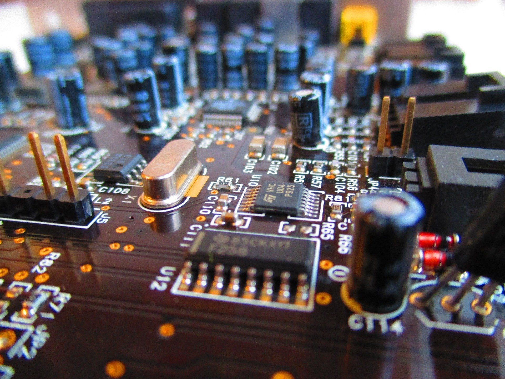

Explore o universo da Informática e suas aplicações no mundo tecnológico.
O curso de eletrônica é um campo empolgante que envolve o estudo de circuitos, componentes elétricos e tecnologias que dão vida aos aparelhos que usamos diariamente. Desde os mais simples até os mais avançados, quase todos os dispositivos eletrônicos dependem do trabalho de profissionais capacitados para desenvolver, manter e inovar sistemas eletrônicos.
A escolha por eletrônica abre um leque de possibilidades no mercado, que inclui setores como telecomunicações, automação industrial, tecnologia da informação, automotivo, entre outros. Vivemos em um mundo digital e automatizado, e essa tendência só aumenta, o que valoriza muito a habilidade de entender e manipular circuitos e sistemas eletrônicos.
No curso, você não só aprenderá conceitos essenciais, como o funcionamento de transistores, resistores e capacitores, mas também desenvolverá habilidades práticas em montagens e manutenções, que são cruciais para qualquer projeto eletrônico. Além disso, a eletrônica proporciona uma grande capacidade de solucionar problemas, pois você lidará com diagnósticos de sistemas, reparos e a criação de soluções tecnológicas.
Esse aprendizado impacta também no dia a dia. Com o conhecimento de eletrônica, você entenderá o funcionamento de vários aparelhos e saberá lidar melhor com problemas comuns, economizando tempo e custos. Além disso, é gratificante saber que você pode ser parte do desenvolvimento de inovações, seja na criação de novos dispositivos ou na melhoria dos já existentes, contribuindo para o avanço da tecnologia.
Iniciar esse curso pode parecer desafiador sem um conhecimento prévio, mas com a prática e a orientação certa, você construirá uma base sólida. Ao final, terá desenvolvido habilidades que abrem portas para uma carreira promissora e dinâmica, cheia de oportunidades para fazer a diferença no mundo conectado e tecnológico de hoje.
Para informções sobre o processo da matrícula, clica aqui:
Matrícula